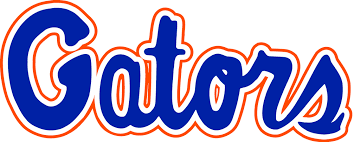

Cameron J. Kozlin


About Me
I'm a second year at the University of Florida, majoring in Computer Science with a minor in Spanish. As I practice my Web Development skills, I am making this website to serve as my online portfolio, and I plan to update it regularly as I learn how to apply new concepts.
And, as you may be able to tell by looking at this website, blue is my favorite color.
Involvement
- Counselor for Camp Kesem UF, an organization that holds an annual Summer camp for children whose lives are affected by a parent's cancer
- Member of General Releif in Prosthetics (GRiP), a club that designes and 3-D prints prosthetics for children
- I have contributed to research in the field of Computer Science, and was published as a co-author in this study
Skills
- Proficient in C++, Java, and Python
- Learning front-end languages such as HTML, CSS, and JavaScript in my spare time (hence the website)
- Always ready to learn new languages, libraries, and programming concepts!